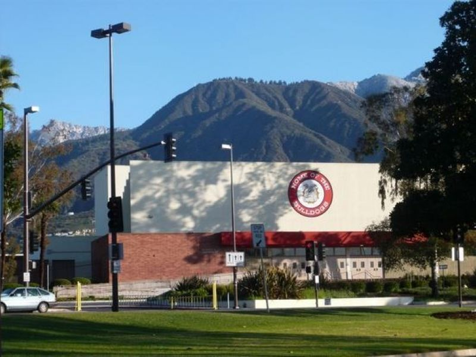

Freshman year I was in JROTC (Junior Reserve Officer Training Corps) and we did a lot of school activities. One of them was being a tour guide here at Pasadena High School for 8th graders that were considering this school. Me and a couple of other cadets were in charge of groups from a variety of middle schools that were looking forward to come to our school. We went through most of the classrooms looking at students studying and working on classwork and projects. It was a fun experience and helped me handle groups a bit better.
